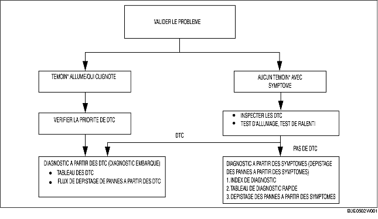

AVANT-PROPOS [FN4A-EL]
B3E050219090W02
• Lorsque le client signale une anomalie du véhicule, vérifier le témoin indicateur d'anomalie (MIL), le clignotement du témoin d'avertissement AT, et le code de diagnostic d'anomalie (DTC) de la mémoire du PCM, puis diagnostiquer l'anomalie conformément à l'organigramme suivant.
-
- Si un DTC est détecté, diagnostiquer le DTC concerné. (voir la section TABLEAU DES DTC [FN4A-EL].)
-
- Si aucun DTC n'est détecté, le témoin MIL reste éteint, alors que le témoin d'avertissement AT ne s'allume pas. Diagnostiquer le dépistage des pannes à partir des symptômes concerné. (voir la section TABLEAU DE DEPISTAGE DES PANNES A PARTIR DES SYMPTOMES.)

*: Témoin d'anomalie (MIL), témoin d'avertissement AT